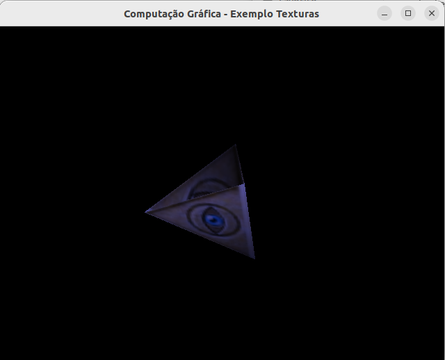

O Laboratório visa executar os projetos, e verificar os conceitos apresentados sobre: Mapeamento de Textura.
Laboratório 7 - Mapeamento de Textura
Atualizado em 24/11/2022 ás 16:03
Introdução à Estrutura de OpenGL
Introdução
Nesta aula prática faz-se uma introdução aos os aspectos práticos de Mapeamento de Textura em objetos geométricos tridimensionais de computação gráfica através do OpenGL.
O mapeamento de textura (texture mapping) permite que voce cole uma imagem de uma parede de tijolos (por exemplo, obtido pelo scaneamento de uma foto real) num poligono e desenhar a parede inteira como sendo um único poligono. Por exemplo, quando a parede é vista em perspectiva, os tijolos podem se parecer mais pequenos à medida que a parede fica mais longe do ponto de visualização. Outros usos do mapeamento de textura incluem a pintura de vegetação em grandes poligonos representando o chão em simulação de voos; padroes de papel de parede; e texturas que fazem os poligonos se parecerem substancias naturais tais como marmore, madeira, ou tecido. As possibilidades sao infindáveis. Apesar de ser mais natural pensarmos em aplicar texturas sobre polígonos, as texturas também podem ser aplicadas em todas as primitivas – pontos, linhas, poligonos, bitmaps, imagens.
Atividades
Foi realizado o dowload e execução dos arquivos de código disponibilizados de Mapeamento de Textura.
1°. Projeto: "checker.c"
Figura 1 - Resultado do código "checker.c".
2°. Projeto: "texbind.c"
Figura 2 - Resultado do código "texbind.c".
Respondendo as questões solicitadas. Qual o resultado da utilização de dua texturas? Como seria possível aplicar ambas texturas num mesmo objeto Todas as questões podem ser resolvidas analisando este pequeno recorte do código Um mix de texturas Primeiro precisamos modificar o fragmente shader para selecionar as misturas, depois interpolar as unidades das misturas
Códigos Fonte
Foram realizados os dowloads, modificações e execuções dos arquivos de código de Mapeamento e Textura.
Exercícios para Entregar
Figura 4 - Resultado do Exercício 1.
Analise e conclusão:
- Utilizando os conceitos aprendidos na disciplina foi possivel aprofundar os fundamentos de Mapeamento de textura utilizando a linguagem C++ e a biblioteca OpenGL.